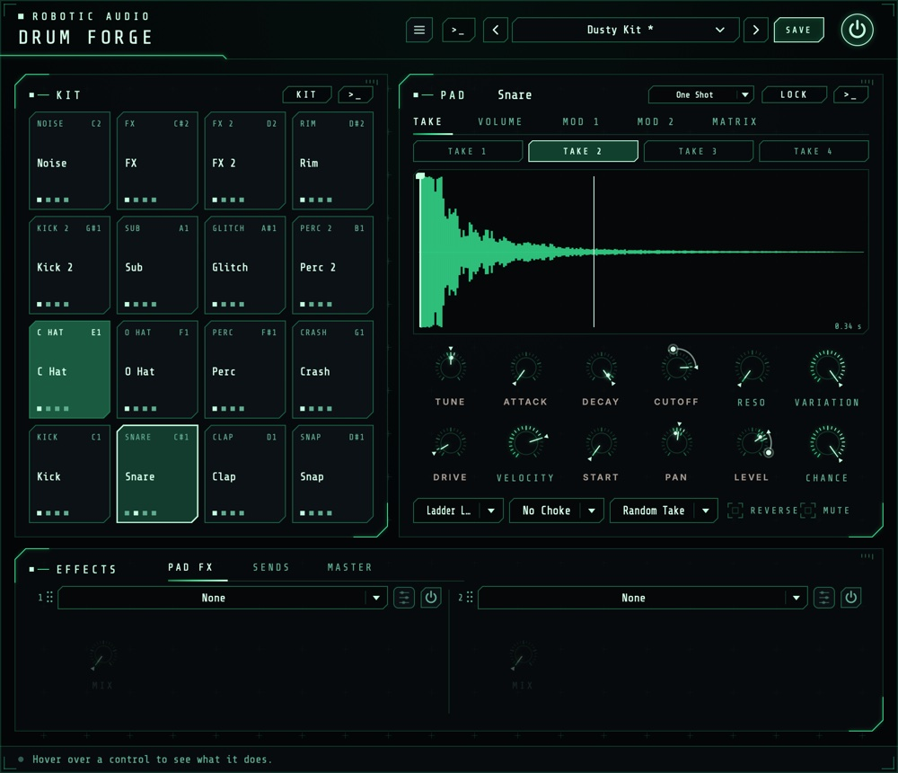
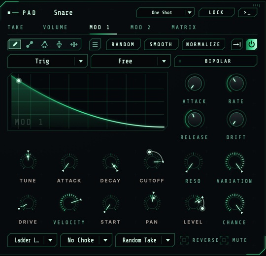
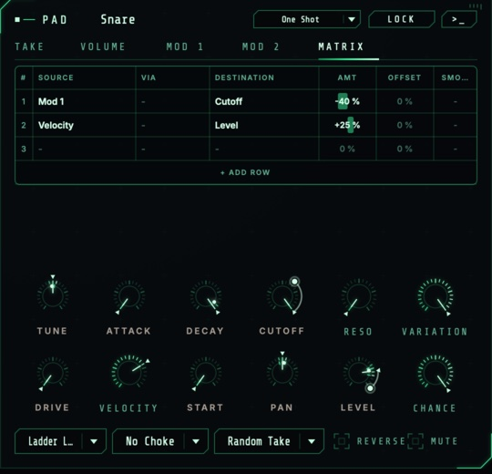
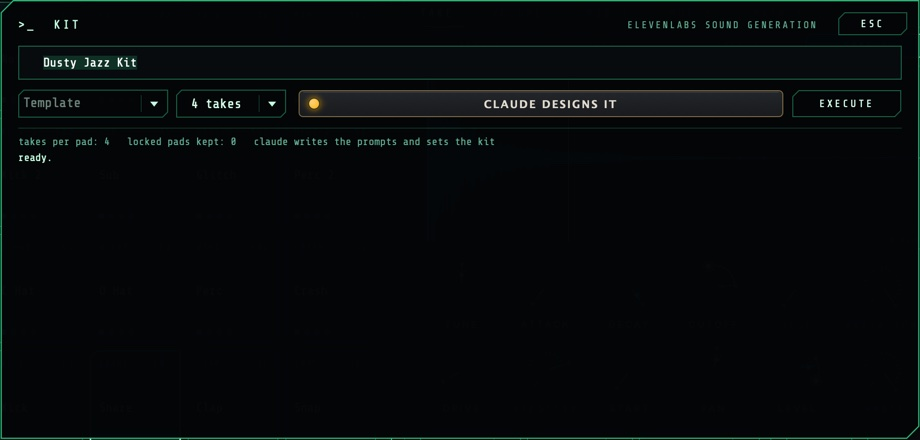
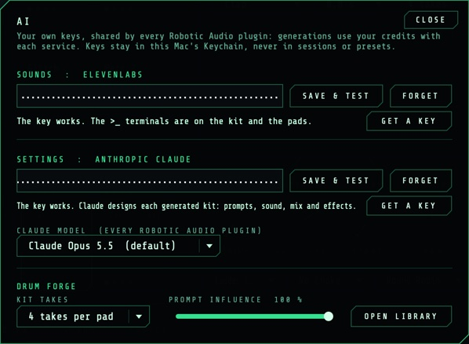

Drum Forge
A sixteen-pad drum sampler. Load your own hits, or, with your own ElevenLabs key, generate them: a whole kit from a style, or one pad from a prompt, with Claude designing the kit around them if you add an Anthropic key. Every hit can pick its own tune, level, pan and more from a range, play a random take, or not play at all; three drawn envelopes and a matrix per pad move the rest.
- 16 pads, MIDI C1–D#2
- 4 takes per pad
- Ranges per hit, Chance
- 3 drawn envelopes per pad
- 6-slot matrix per pad
- 2 effects per pad, 2 sends, 4 master
- Optional AI generation
- AU · VST3 · Standalone

Quick start
From an empty kit to your first beat.
Fill a pad
Drop an audio file on a pad, or right-click it and choose Load a File.... Drop more files on the same pad for up to four takes.
Play
Click a pad (harder towards its top) or play MIDI notes C1 to D#2. Pad 1 is at the bottom left.
Shape it
The pad you click is the one the right side shows: tune it, shorten its Decay, filter it, give it effects.
Make it breathe
Shift-drag Tune or Level to give it a range: every hit picks its own value inside it.
Or generate it
With an ElevenLabs key (menu > AI...), the >_ on the kit makes a whole kit from a style, the one on a pad that pad's takes.
Save the kit
SAVE in the header keeps the kit as a preset: every pad's takes, settings, envelopes, matrix and effects.
The window
The kit on the left, the selected pad on the right, the effects below.
- Header
- The preset bar (previous, next, the list, SAVE) for kits, the power button (bypass) and the menu (three lines) with this manual and AI.... With a working ElevenLabs key, a >_ beside the preset bar opens the kit's terminal. Click the logo for the version and credits. Until Drum Forge is licensed, a DEMO or TRIAL chip beside the menu opens the licence.
- KIT
- The sixteen pads. KIT above them opens the kit menu, >_ the kit's terminal.
- PAD
- The selected pad: its name, Play Mode, LOCK and >_; the tabs TAKE, VOLUME, MOD 1, MOD 2 and MATRIX; its sound as two rows of knobs; and Filter, Choke, Takes, Reverse and Mute.
- EFFECTS
- On tabs: the pad's two effect slots (PAD FX), its sends and the two send effects (SENDS), and the master chain (MASTER).
Knobs reset with a double-click and take fine steps with Cmd, Ctrl or Alt. A knob the matrix moves shows a ring with its range and a dot where it is now.
Signal flow
What happens on a hit.
A hit picks a take, plays it from Start, at Tune, through Attack, the Decay and the Volume envelope, then the pad's filter and drive and its two effect slots. Then its mixer: Level, Pan and the two sends. All sixteen pads meet in the master chain; the sends' effects come back into it too.
A pad always chokes itself: a new hit fades out what it still plays in 3 ms. A pad that has been silent for three seconds, its effects rung out, costs nothing until it's hit again.
The kit
Sixteen pads, C1 to D#2.
Pads run from 1 at the bottom left (C1, MIDI note 36) to 16 at the top right (D#2). Each shows its role, its name, a lock when it's locked and a dot for each take it has; it lights on every hit.
| Do this | To |
|---|---|
| Click a pad | Select it and play it (harder towards its top) |
| Drop an audio file on a pad | Add it as a take (WAV, AIFF, FLAC, MP3, OGG) |
| Right-click a pad | The pad menu: Generate... (with a key), Load a File..., its Role, Lock and Clear Pad |
| Double-click the pad's name | Rename it |
The kit menu
- Apply Template (Roles)
- Gives every unlocked pad a role, which its generated prompt asks for: Standard, Electronic, Percussion, FX / Foley, or Free (Pad 1-16), where the pads have no role and the prompt alone decides what each is.
- Apply Smart Defaults
- Sets every unlocked pad's level, pan (from the drummer's seat), choke group, sends, takes and ranges for its role: the hats in one choke group, a little human variation on hats, claps and percussion, kicks tight.
- Redesign the Settings with Claude
- With an Anthropic key: Claude sets every unlocked pad's sound, mix and effects for the kit's style, without new sounds.
- Clear Unlocked Pads
- Empties every pad that isn't locked.
- Open the Sample Library
- The folder where generated takes are saved.
Takes
Up to four versions of each hit.
The TAKE tab shows the pad's four takes as buttons over the selected take's waveform. Click a take to select and play it; right-click it to Load a File into Take, Remove it or Show in Finder. On the waveform, drag the line to set Start; the curve over it is the decay, and a line follows the playhead while the pad sounds.
- Takes
- Which take a hit plays. Single Take: the selected one. Round Robin: the next of the pad's takes on every hit. Random Take: one at random, never the one just played. The view follows the take that plays.
The pad's sound
Two rows of knobs, and the switches under them.
- Play Mode
- One Shot plays the whole hit and ignores the note-off. Gate plays while the note is held, and Decay becomes the release after it.
- Tune
- The pad's pitch. −24 to +24 st
- Attack
- Fades the hit in, from a click to a swell. 0 to 500 ms
- Decay
- How fast the hit dies away (to −60 dB); at Full the take plays out. In Gate mode, the release. 10 ms to 10 s, Full
- Cutoff, Reso
- The filter's frequency and its peak. 20 Hz to 20 kHz · 0 to 100 %
- Drive
- Saturation, from warmth to crushed. 0 to 100 %
- Velocity
- How much softer a soft hit plays; 0 plays every hit the same. 0 to 100 %
- Start
- Where in the take a hit starts (also the line on the waveform). 0 to 100 %
- Pan, Level
- The pad's place and level in the kit. 100 L to 100 R · −inf to +6 dB
- Variation, Chance
- See Ranges & Chance.
- Filter
- No Filter, or one of fourteen: ladder low, high and band passes (24 and 12 dB), SVF Morph and Notch, Diode, MS-20, Formant, Comb + and −, Phaser.
- Choke
- Pads in the same group (1 to 8) cut each other off: a closed hat stops the open one.
- Reverse, Mute
- Plays the take backwards; silences the pad.
Level, Pan, Tune, Decay, Mute and the two sends are host parameters for every pad, so you can automate them; the rest belong to the pad and are saved with the kit.
Ranges & Chance
Every hit a little different.
Tune, Attack, Decay, Cutoff, Drive, Start, Pan, Level and the two sends are range knobs. Drag one to set its value as usual; Shift-drag (or Shift-scroll) to give it a range around that value. Every hit then picks its own value inside the range, and the knob's marker shows the last hit's pick. Double-click resets both.
- Variation
- How much of the ranges each hit uses: 0 % plays every hit at the knobs' values, 100 % uses the whole ranges. One knob to dial a pad's looseness in or out.
- Chance
- How likely a hit is to play at all. Below 100 %, hits drop out at random; a hit that doesn't play chokes nothing either.
Envelopes
Three drawn envelopes per pad.

VOLUME shapes the pad's level over time while its power button is on. MOD 1 and MOD 2 do nothing on their own: route them to something in the matrix. Each restarts with a hit; the drawing shows where it is.
- Drawing
- Draw the shape with the tools along the top (draw, line, warp, lift, move), or start from the menu's shapes, waveforms and windows. RANDOM, SMOOTH and NORMALIZE work on the whole shape, or on a region you mark with Shift-drag. Cmd+Z undoes.
- Loop
- The loop button picks Off (play once and hold the end), Forward, Backward or Palindrome; drag the handles under the drawing to set the loop.
- Trigger
- Trig restarts with every hit; Legato only when the pad isn't still sounding; Tempo follows the song position, like a tempo-synced LFO.
- Sync
- Free: Rate sets the speed (at 1x the whole shape takes 2 s). Note, Dotted or Triplet: the shape lasts a note value at the host's tempo, chosen in place of Rate. While the host is stopped, it keeps time at the tempo.
- Attack, Release
- Fades over the shape at the start and after the note ends (Gate). Right-click either to switch it off.
- Drift
- A smooth random wobble added to the output.
- Bipolar
- Mod 1 and Mod 2: the middle of the drawing is no movement, so the envelope swings both ways (for pitch).
Matrix
What moves what, for each pad.

Each pad has six slots. A slot adds its SOURCE (times its VIA, if it has one) times AMT to its DESTINATION; OFFSET adds a fixed amount, SMOOTH glides it. An amount of 100 % moves the destination across its whole range.
The matrix shows the rows in use and one empty row after them. + ADD ROW adds more, up to six. Right-click a row to insert a row above it, remove it (the rows below move up) or clear it.
- Sources
- Vol Env, Mod 1, Mod 2, Velocity, Random (a new value per hit, both ways), Mod Wheel and Aftertouch.
- Destinations
- Tune, Level, Pan, Cutoff, Resonance, Drive, Send A and Send B, which move while the pad sounds; and Decay, Start and Attack, which are taken at each hit.
- Right-click a knob
- Any knob the matrix can move: Modulate ... by lists the sources, the ones already routed to it ticked with their amount. Choose one to route it in a free slot at 25 %, a ticked one to remove it; Remove All Modulation, and Edit in the Matrix... to set the amount.
Effects
Two per pad, two sends, four for the kit.
- PAD FX
- The selected pad's two effect slots, after its filter and drive: any of the suite's effects but the delay, the reverbs and Tape Stop (the sends have those).
- SENDS
- The pad's Send A and Send B (range knobs too), and the two send effects every pad feeds: a delay and a reverb to begin with, any effect if you like. Only their wet sound comes back.
- MASTER
- Four slots over the whole kit, in order, and Master, the kit's level.
In every slot: the menu picks the effect, the power button switches it, the knobs are its favourite settings and the edit button opens its full editor, with a display to drag on. Drag a slot by its grip to reorder the chain.
Generating sounds
With your own ElevenLabs key.

Once a key works (Keys), a >_ shows on the kit, on the pad card, beside the presets, and on each pad under the mouse. It opens a terminal: type, press Return (or EXECUTE); ESC closes it, and what's running carries on. Press EXECUTE again (it reads CANCEL) to stop what hasn't arrived.
- Kit
- A style ("dusty 90s boom bap, vinyl crunch"), a Template for the pads' roles and the takes per pad (1 to 4). Every unlocked pad gets takes for its role in that style.
- Pad
- The prompt itself, the pad's Role, the length to ask for (0.5 to 30 s) and the takes. The new takes replace the pad's own as they arrive.
Each take is cleaned up (faded in, levelled, the silence after the hit trimmed), saved as a 24-bit WAV with its prompt in the file's description in the sample library (Samples/Generated/<style> next to the presets), and loaded. A take that comes back nearly silent is asked for once more. A pad is named after its prompt. The log shows each pad's takes as they come in.
Claude designs the kit
With an Anthropic key as well.
With CLAUDE DESIGNS IT on in the kit's terminal, Claude first designs the kit from your style: each unlocked pad's prompt and length, its sound (tune, attack, decay, filter, drive, velocity), its mix (level, pan, choke group, sends), its two effect slots, its takes mode, ranges, Variation and Chance; and the send and master effects. Then the takes are generated from its prompts. Pads of the Free template have no role: Claude decides what each one is, from your words alone.
If Claude can't be reached, the template's prompts and the smart defaults are used instead. Redesign the Settings with Claude in the kit menu does the design without new sounds.
Keys
Menu > AI...

- SOUNDS: ELEVENLABS
- The key that generates takes. Paste it and press SAVE & TEST; the line under it says whether it works. GET A KEY opens ElevenLabs' page.
- SETTINGS: ANTHROPIC CLAUDE
- The key with which Claude designs kits.
- CLAUDE MODEL
- Claude Opus 5.5 (the default), Sonnet 5.5 or Haiku 4.5: quicker and cheaper as you go down.
- KIT TAKES, PROMPT INFLUENCE
- How many takes each pad gets when a whole kit is generated, and how closely the sounds follow the words.
- OPEN LIBRARY
- The folder of generated takes.
Kits & presets
A kit is a preset.
SAVE keeps the whole kit: every pad's takes (the files, by where they are), name, role, settings, envelopes, matrix and effects, and the sends and master chain. Keep the files where they are (the sample library, for generated takes), so the kit finds them again. The power button bypasses the plugin with a short, click-free crossfade.
Recipes
Starting points.
Three or four takes of a hat, Random Take, Tune range 3 %, Level 12 %, Pan 6 %. Played straight, it sounds played.
MOD 1 starts as a fall. Right-click Tune and choose Mod 1, then raise the amount in the matrix (25 % is 12 st): each hit starts high and swoops down to the pad's pitch. Raise Rate for a faster drop.
Right-click Cutoff, choose Velocity: soft hits dull, hard ones bright.
A long noise or texture take in Gate mode; in VOLUME pick a square from the menu's waveforms, Trigger Tempo, Sync Note at 1/16. Hold the pad: it chops in time with the song.
A copy of the snare on another pad, quieter, Chance 40 %, a wide Start range: play it on every sixteenth.
Template Free (Pad 1-16), CLAUDE DESIGNS IT on, and a style like "a kit made of a ticking clock workshop".
Licence
Try it, activate it, move it to another computer.
Without a licence, Drum Forge runs as a demo: the sound drops out for 3 seconds every 45 seconds. Everything else works, saving included, so you can try it properly and keep what you made when you buy it. While it isn't licensed, the header shows DEMO (or TRIAL with the days left); click it, or choose Licence... in the menu, for the licence panel. It also opens by itself when the window opens in demo.
- ACTIVATE
- Opens the shop in your browser. Sign in, choose your licence for this computer, and Drum Forge unlocks a few seconds later.
- START TRIAL
- Everything, free, for 14 days, once per computer. The header counts the days down. Activate a licence at any time; your sounds and sessions stay as they are.
- BUY
- The plugin's page on roboticaudio.com, with its Buy button.
- SAVE DEVICE FILE / LOAD LICENCE FILE
- For a computer without the internet. Save the device file, take it to the shop's activation page on a computer that is online, and load the licence file it gives you back.
- DEACTIVATE
- Frees this computer's seat, so you can activate the licence on another one. CHECK NOW confirms the licence with the shop straight away.
Specifications
The numbers.
| Property | Value |
|---|---|
| Pads | 16, MIDI notes C1 (36) to D#2 (51) |
| Takes | 4 per pad; Single Take, Round Robin, Random Take |
| Ranges | Tune, Level, Pan, Decay, Start, Cutoff, Drive, Attack, Send A, Send B; Variation; Chance |
| Envelopes | 3 drawn per pad (Volume, Mod 1, Mod 2); Trig, Legato or Tempo; Free or synced to note values |
| Matrix | 6 slots per pad, 7 sources, 11 destinations |
| Filter | 14 types, per pad |
| Choke groups | 8 |
| Effects | 2 slots per pad, 2 send effects, 4 master slots |
| Host parameters per pad | Level, Pan, Tune, Decay, Mute, Send A, Send B, the effect slots |
| Generated takes | 0.5 to 30 s, 24-bit WAV, with your ElevenLabs key |
| CPU | A pad silent for three seconds costs nothing |
| Formats | AU, VST3, Standalone |
| Licence | Activation in the browser or with a licence file; 14-day trial; a demo without either |